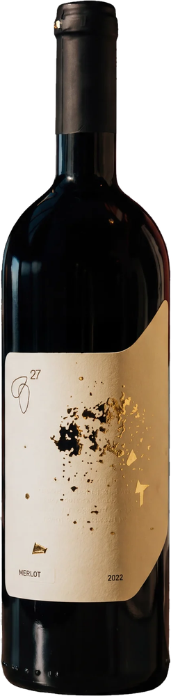
Vinarija 27
Merlot
Baršunast i punog tela, sa notama zrele šljive, crne trešnje i blage vanile iz hrastovog bureta.
Saznaj više
Da biste pristupili sajtu, morate biti punoletni.
Klikom na „Da, jesam“ potvrđujete da imate 18 ili više godina.
Žao nam je — sadržaj je dostupan samo punoletnim osobama.
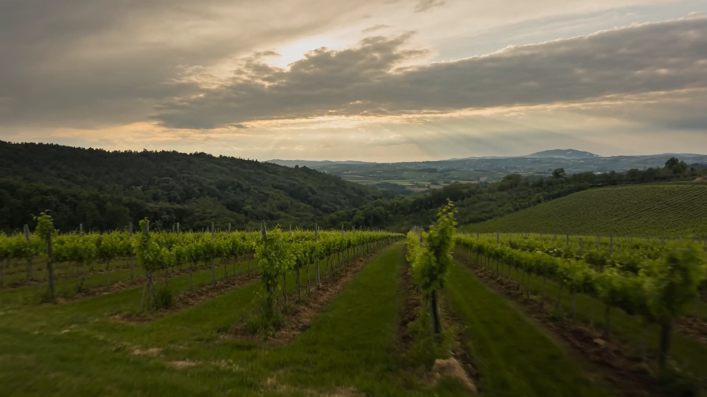
Vinogradi, vino i doživljaj — u srcu Šumadije, nadomak Topole.
SkrolujteNa porodičnom imanju od 12 hektara u Ovsištu, nadomak Topole, Vinarija 27 živi među brežuljcima Šumadije — tamo gde vinova loza raste vekovima.
Od 2020. godine spajamo modernu vinarsku viziju sa duhom ovog kraja: negujemo vinograd ručno, beremo u pravom trenutku i pravimo vina koja čuvaju karakter tla iz kog dolaze.
Verujemo da se dobro vino pravi u vinogradu — a pije u dobrom društvu.
Pročitajte našu pričuOd čokota do boce, postarali smo se da svako vino Vinarije 27 nosi sunce Šumadije. Grožđe beremo ručno i vinifikujemo sa poštovanjem prema tradiciji i prirodi u kojoj nastaje.

Baršunast i punog tela, sa notama zrele šljive, crne trešnje i blage vanile iz hrastovog bureta.
Saznaj više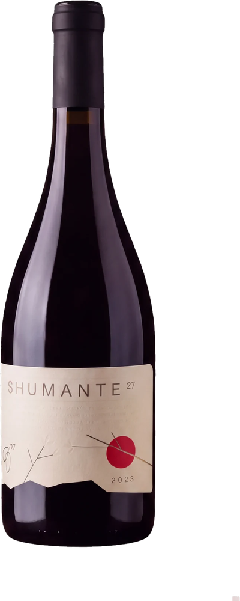
Naš penušavac pun životne radosti — fini mehurići, zrelo voće i cvetna svežina.
Saznaj više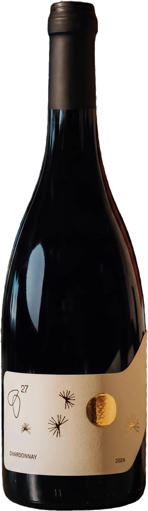
Sveže i elegantno belo vino sa notama zelene jabuke, citrusa i belog cveta.
Saznaj više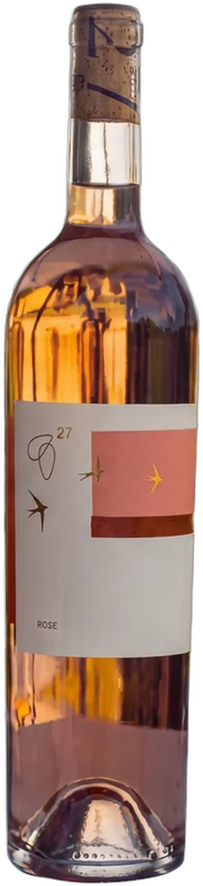
Nežan roze penušavac sa notama divlje jagode i ružinih latica — za tople letnje večeri.
Saznaj više
Brežuljci Oplenca — ručna berba
Južne padine, krečnjačko tlo i topla šumadijska leta daju grožđe pune zrelosti. Zato u podrumu ne tražimo prečice — vino nastaje od grožđa, vremena i strpljenja.
Više o imanjuNaša misija je da svaki korak, od loze do boce, bude u skladu sa zemljom
Bez hemijskih prečica, sa minimalnim zahvatom u podrumu i strpljenjem koje traje koliko god je potrebno. Svaka berba je drugačija — i upravo to želimo da osetite u čaši.
Upoznajte naša vinaIz bašte i vinograda — pravo na sto
Tradicionalni ukusi Šumadije sreću se sa modernom kuhinjom. Sezonski meni, domaći sirevi i mezetluk, pažljivo upareni sa vinima Vinarije 27 — na terasi sa pogledom na dolinu.
Rezervišite sto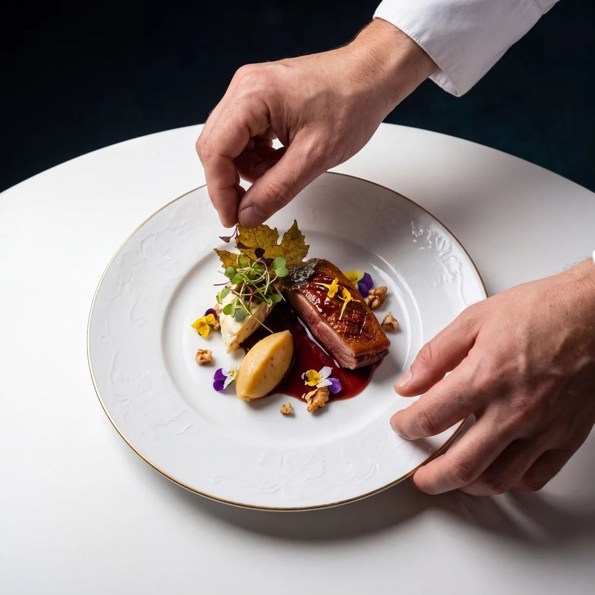
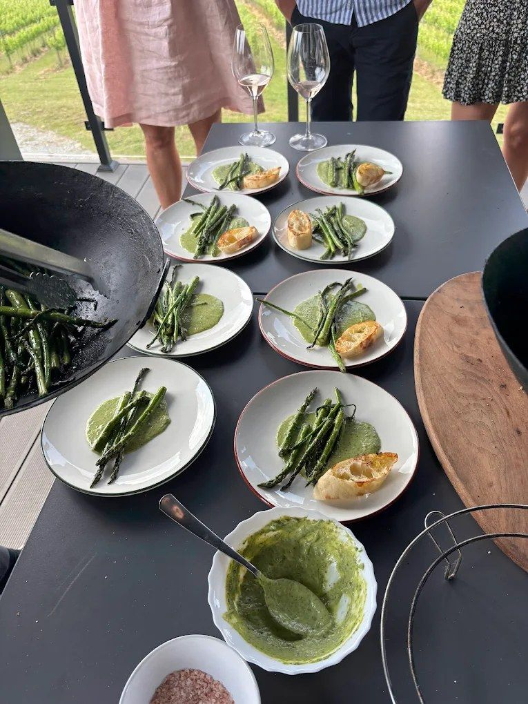
Imanje Vinarije 27 je više od vinarije — mesto za odmor, slavlje i trenutke koji se pamte.
Prelepo mesto sa magičnim pogledom i toplinom. Dobra vina — Shumante bih preporučio svima.B. M.
Predivan, miran i luksuzno uređen prostor sa dušom. Toplo preporučujem!Iva Branković
Fantastično mesto. Ne samo obična vinarija, već mesto za potpuno, pravo uživanje.Dušan Savković
Prelep ambijent u srcu Šumadije, svako vino govori samo za sebe. Obavezno posetiti!Mića
Pogled na dolinu i vinograde je zadivljujući, a moderna arhitektura daje poseban šarm. Shumante je učinio veče posebnim.Andrey Kukhtin
Elegantna, a opuštena atmosfera, divan pogled i neverovatan izbor vina. Sve je bilo savršeno organizovano.Payton Moormier
Rezervišite degustaciju, sto u restoranu ili boravak — javite nam se i dočekaćemo vas čašom dobrodošlice.
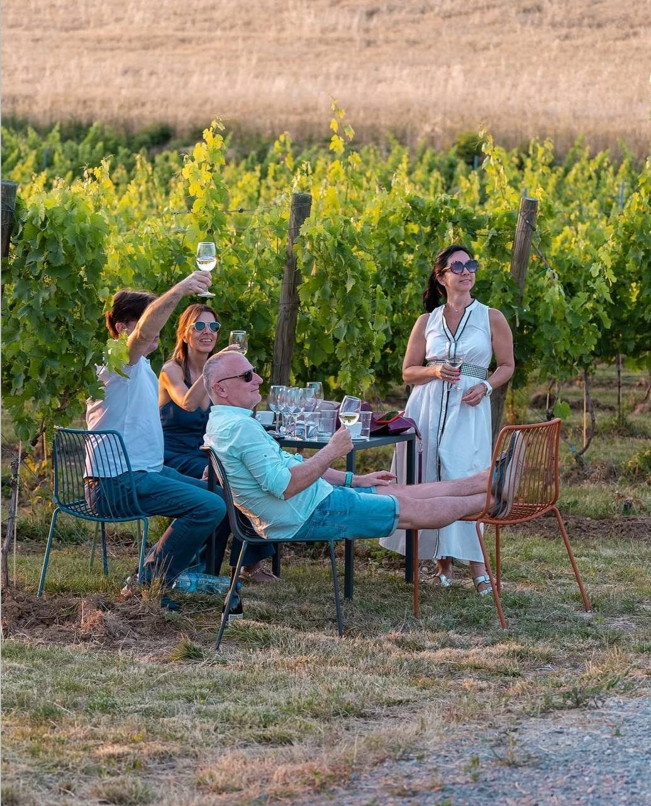